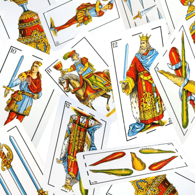

Ahorcado
Puedes descubrir rápidamente cada una de estas palabras ocultas? Vamos, ponte a prueba
Comenzar

Mayor o menor
Tienes que adivinar si la proxima carta es mayor o menor. No puedes cometer ningún error.
Comenzar
Preguntados
Adivina las respuestas de seis categorías diferentes: geografía, historia, arte, ciencia.
Comenzar